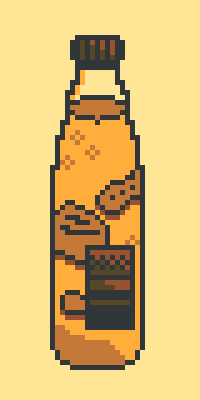

Pixel art is a type of digital art where art is created at the pixel level. Every pixel's location is important. Changing even one pixel's color and location has the potential to drastically change the artwork as a whole.
It was originally used in early computers and game consoles, since those had little memory space (could only display a few colors at once) and low-resolution graphics (individual pixels were distinguishable). Nowdays, pixel art is considered to be an art style/aesthetic. It's commonly used in indie games, such as Undertale and Stardew Valley, to name a few.